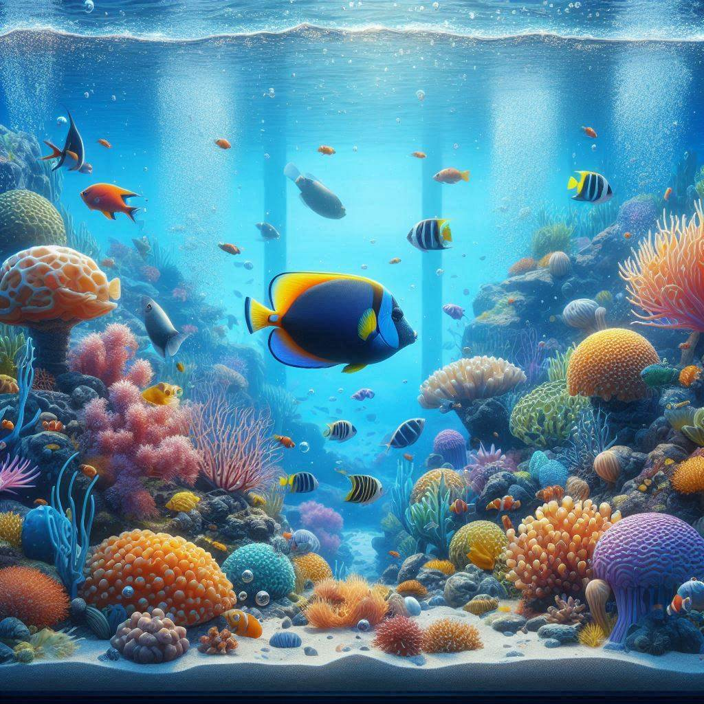

🦈
🐬
🐳
🐠
🐟
🐋
🦞
🐡
🦐
🦑
🐙
¿ Que es Ilove the fishes ?
Es un sitio web en el que encontraras todo sobre los peces para acuario y informacion de especies de peces en estado salvaje.
Ultimas noticias
Como armar un acuario todo lo que tienes que saber.
Peces recomendados para principiantes en la acuariofilia.
Los peces mas exoticos para tu acuario.
Los peces carniboros para tu acuario.
Videos interesantes
Como limpiar el acuario
En este video aprenderas los cuidados basicos de la limpieza de tu acuario.
Goldfish cuidados
En este video se analiza en profundidad los cuidados del pez Goldfish.
Acuarios comunitarios
En este video se muestran 5 consejos para montar un acuario comunitario con exito.
Plantas faciles
En este video se muestran 10 platas recomendadas por su facilidad a la hora de cuidarlas.
Contenido educativo
X
Este documental trata acerca de los peces en estado salvaje, como se comportan en su avitad, desde los peces del mar, hasta los del rio.

X
Este documental trata acerca de la vida en general dentro del oceano y las cadenas alimentacias formadas en estos avitads.
X
Este documental trata sobre los peces mas inprecionantes que havitan en los rios y los oceanos.
X
Este documental trata sobre los pulpos y los misterios que hay atras de esta criatura manifica.